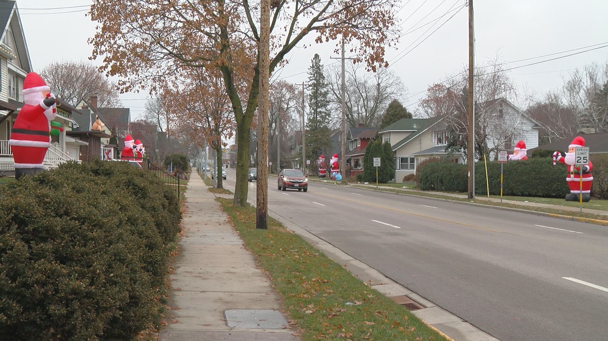
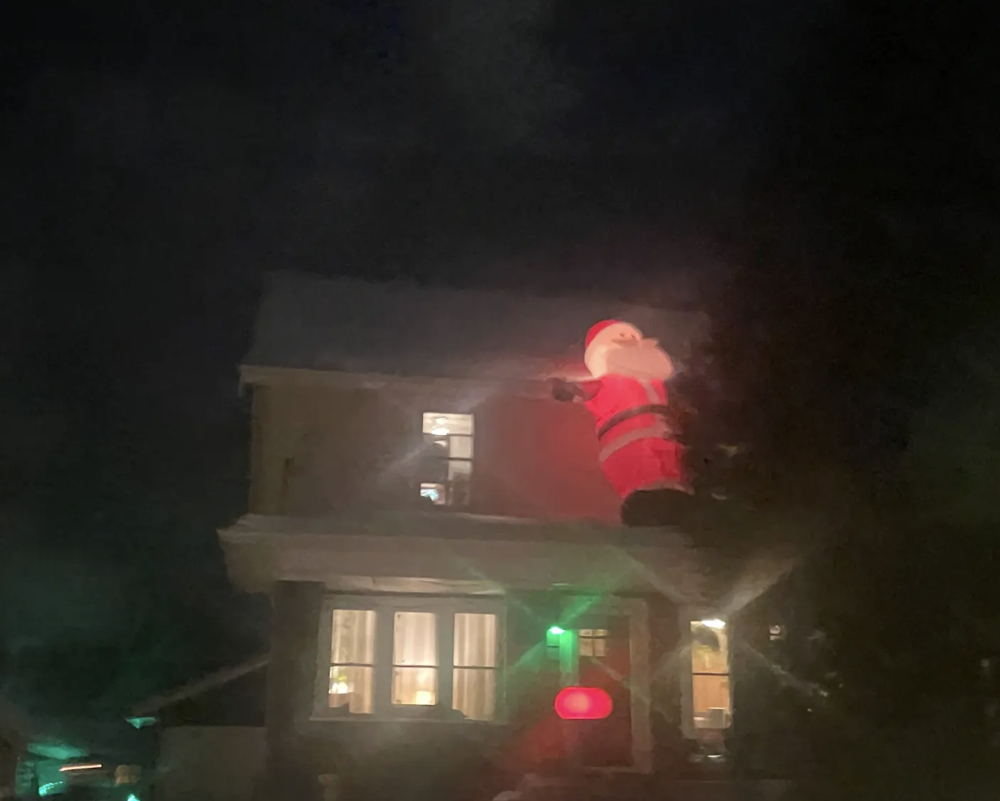

🎅 SANTAS IN 2026—spotted so far
⛄ SNOWMEN IN 2026—spotted so far
THE SANTA RECORD TO BEAT: 115
Will we beat last year?
Loading this season's sightings…
Find your next giant Santa.
Loading sightings…
🎅 Santa ⛄ Giant inflatable snowmanLoading…
FROM THE NEIGHBORHOOD
Big Santas. Bigger smiles.




Make your yard part of the tradition.
Find a giant inflatable Santa, then put your own display on the map.
Get your own Santa!Sizes, prices, and availability vary by retailer.
A SOUNDTRACK FOR SANTA SPOTTING
A little holiday magic?
“Dance of the Sugar Plum Fairies” · Tchaikovsky
Music is optional. Press Play whenever you like.
Recording by Kevin MacLeod (incompetech.com), licensed under CC BY 4.0. Recording unmodified.